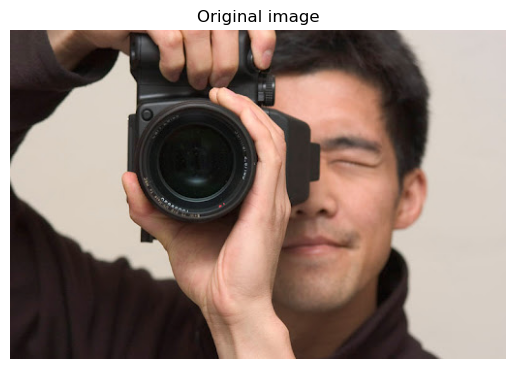

We have split the main parts of our project into four sections:
Kuwahara filter: We have created a function to take in an unprocessed image and perform Kuwahara filtering on the image. This removes fine details that may detract from the overall paint-by-numbers style we are going for. The image we output will then be passed through K means clustering.
K means clustering: We implemented K means clustering on input images (images with and without Kuwahara filtering). This allows us to determine our k colors for color-by-numbers, by taking the clusters of the image (k groups of data in which are most similar to one another) and averaging the colors across the cluster.
Region Clustering: We used flood fill (starting at a pixel that isn’t in an existing region and then for all unprocessed neighbors that are the same color: add it to that region and to a queue to flood a region recursively). Then we found regions that are under a certain number of pixels and combined them with whichever group it is most connected to (based on the number of adjacent pixels).
UI: We take the generated regions and allow users to click into them. By default we put a black border around each region to show separation. This border can be toggled later to see your painting more clearly. When a region is selected, we display the number of the color the region should be, and let users paint it in with a brush size of their choice. We apply a clipping mask to the input to make sure that you can’t draw outside the lines.
Preliminary Results
We have a working Kuwahara filter function, K means clustering function, and user interface. The user interface is set up well and is ready to receive inputs from images that we produce from filtering and clustering.
An example of filtering and clustering is shown below:
We start with any given image:

Then we apply Kuwahara filtering (here, the window size is 8):
Lastly, we apply K means clustering (here, the number of colors is 5):
We can then input this into a UI to generate a paint by numbers that allows you to color in the image (refer to video for a demo of the UI).
Reflections and Next Steps
Kuwahara filter:
We plan on playing with the window size of the Kuwahara filter before feeding the output image to the K-means clustering step.
The Kuwahara filtering might run a little slow (on the order of tens of seconds to a few minutes), so it would be good to explore ways to speed up our code more.
K means clustering:
Currently the K-means filter takes a little while to run, depending on the number of colors / clusters you are segmenting the image into. Based on how many colors we wish to use, we may need to optimize the K-means code, potentially by using C instead of Python.
The K-means algorithm also produces very different results based on how you initialize the clusters. Currently we initialize the clusters to the first k data points, while this has been working, it is not necessarily the most robust, especially if the algorithm ends because max iterations have been reached rather than because the clusters have converged. Therefore, we likely will need to adjust this initialization.
UI:
The current painting involves a solid fill and a flood fill. We might implement different brush strokes and textures.
We might include a checkbox to toggle whether the proper color should be selected upon clicking a region.
Overall:
The Kuwahara filter and k-means clustering are written in python, and the UI is written in javascript. We might try to tie them together so we can take the output of one program and automatically feed it into the other. We might use a .sh script.